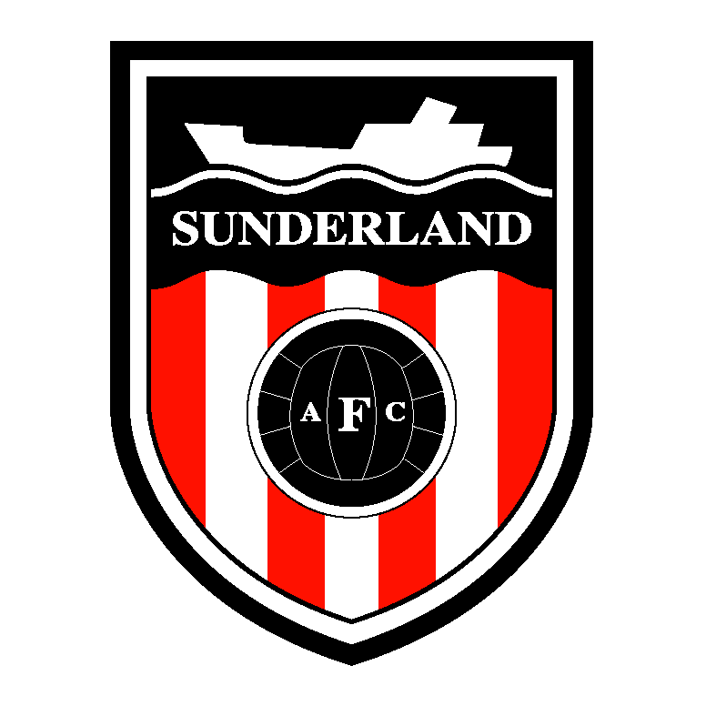
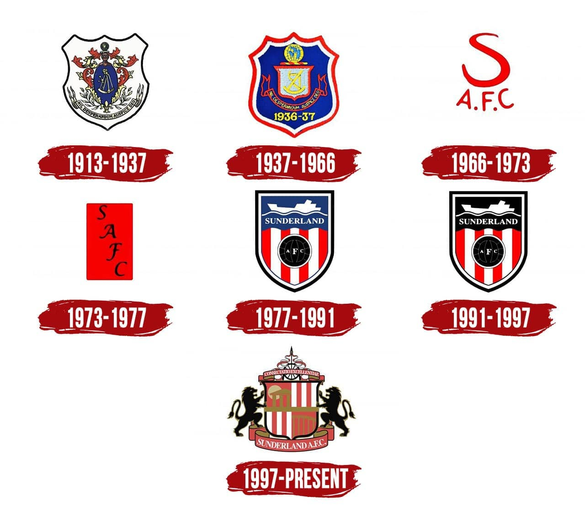
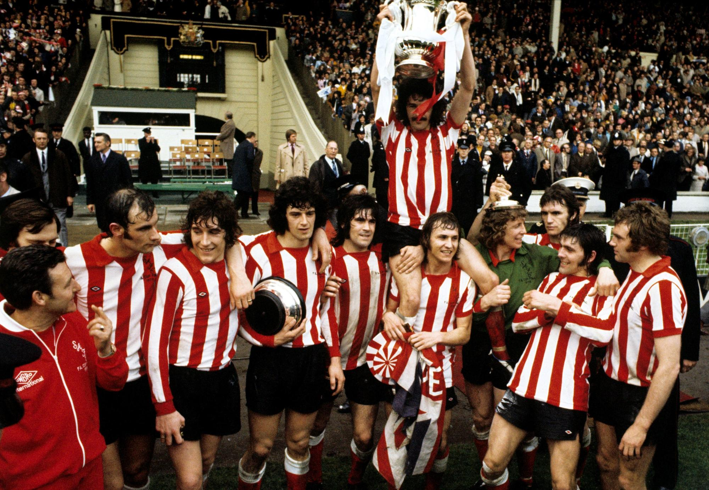

History of the club 
Sunderland is a very historic club
Sunderland Association Football Club are an English association football club based in Sunderland, Tyne and Wear. They were formed in 1879, and played several years in the FA Cup and local cup competitions before joining the Football League in the 1890–91 season in place of Stoke. They played in the top league in England until the 1957–58, season when they were relegated into the Second Division. Sunderland are England's sixth most successful club of all time, having won the English League championship six times: in 1892, 1893, 1895, 1902, 1913, and, most recently, in 1936. They have also been runners-up on a further five occasions: in 1894, 1898, 1901, 1923 and 1935 (see Sunderland A.F.C. seasons). Sunderland have also won the FA Cup twice, in 1937 against Preston North End and in 1973 against Leeds United. They were finalists in 1913 and 1992, where they were beaten respectively by Aston Villa and Liverpool. They were finalists in the 1985 and 2014 Football League Cup Final, where they were beaten respectively by Norwich City and Manchester City. Their other honours include two Charity Shields, in 1902 and 1935.
Sunderland AFC began life as "Sunderland & District Teachers Association Football Club", and was announced to the world on 27 September 1880 by The Sunderland Daily Echo and Shipping Gazette.Originally organised in 1879 by James Allan, a teacher at Hendon Board School, with the objective to provide "recreational amusement" for the area's schoolteachers. Their first recorded competitive game was against Ferryhill Athletic on 13 November 1880, which they lost 1–0. Their first kit was an all blue strip, a contrast to the red and white stripes they play in currently.[5] Their first ground was the Blue House Field in Hendon, close to James Allan's school, and they would change their home four times in seven years before settling at Newcastle Road in 1886. 
Club honours
leagues and cups sunderland won
Formed in 1879, the club has won six top-flight titles (1892, 1893, 1895, 1902, 1913, and 1936) in the First Division, and has finished runners-up five times. The club has also won the FA Cup twice (1937 and 1973) and been runners-up twice (1913 and 1992), as well as winning the FA Charity Shield in 1936 and being finalists the following year. 
Powered by w3.css